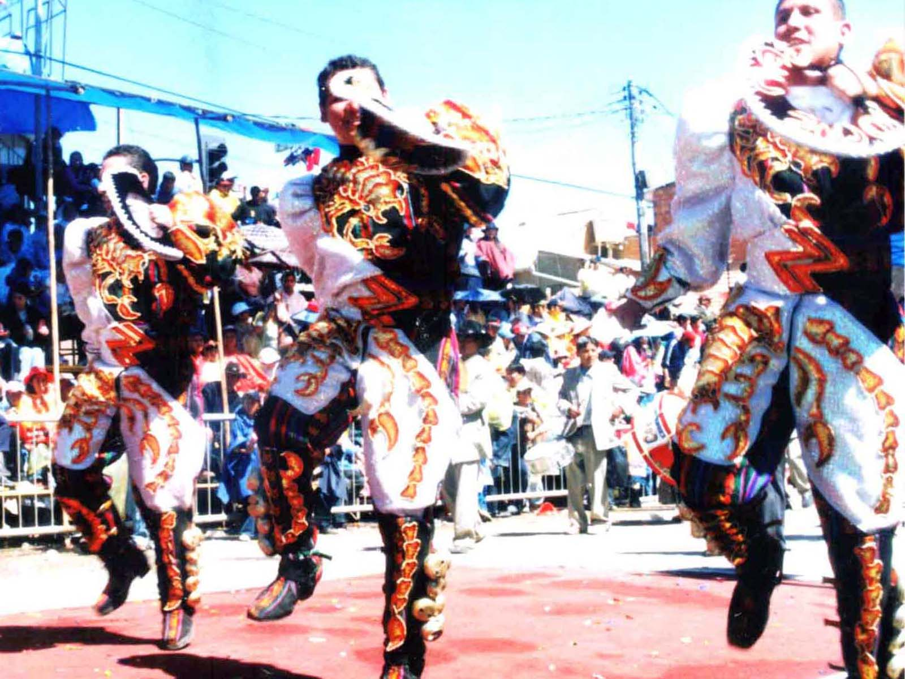
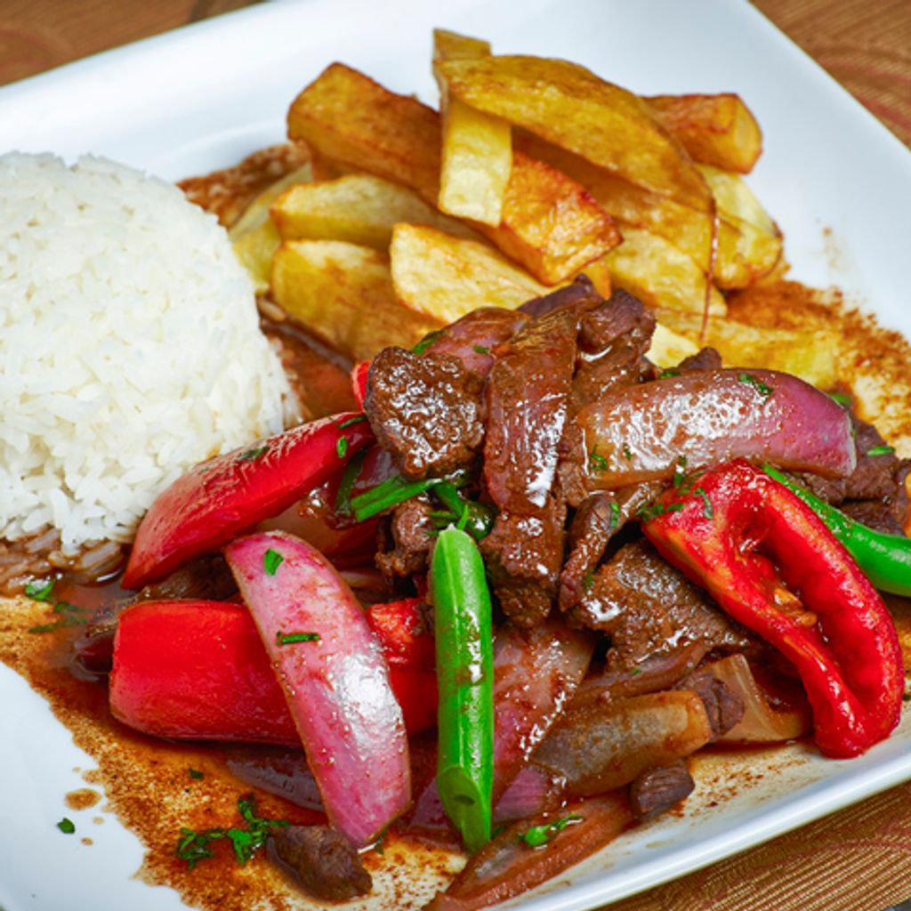

Sobre mí
Hola, mi nombre es Joshimar Navarrete. Soy estudiante de Ingeniería Civil en la Universidad Andina del Cusco. Vivo en la hermosa ciudad de Urcos, un lugar lleno de historia y cultura.
Pasatiempos
Jugar fútbol
Me apasiona jugar fútbol en mis tiempos libres. Es una actividad que me ayuda a mantenerme activo y a compartir momentos con mis amigos.
Mi artista favorito
Disfruto escuchar música de mi artista favorito, quien inspira mi día a día con sus letras y melodías únicas.
Danza o baile
La danza es una forma de expresión que me permite conectar con la cultura y liberar mi creatividad.
Comidas favoritas
Ceviche

El ceviche es uno de mis platos favoritos, una delicia peruana preparada con pescado fresco, limón y especias.
Lomo saltado
El lomo saltado combina sabores únicos de la cocina peruana con carne, vegetales y especias, servido con arroz y papas.
Ají de gallina

El ají de gallina es un plato cremoso y delicioso, hecho con pollo desmenuzado, ají amarillo y un toque de nueces.
Fotos de donde vivo
Vista panorámica
Una hermosa vista panorámica de Urcos, rodeada de montañas y naturaleza.
Plaza principal

La plaza principal de Urcos, un lugar lleno de vida y tradición, ideal para pasear y relajarse.
Lago de Urcos
El lago de Urcos es uno de los atractivos naturales más bellos de la región, perfecto para disfrutar de la tranquilidad.